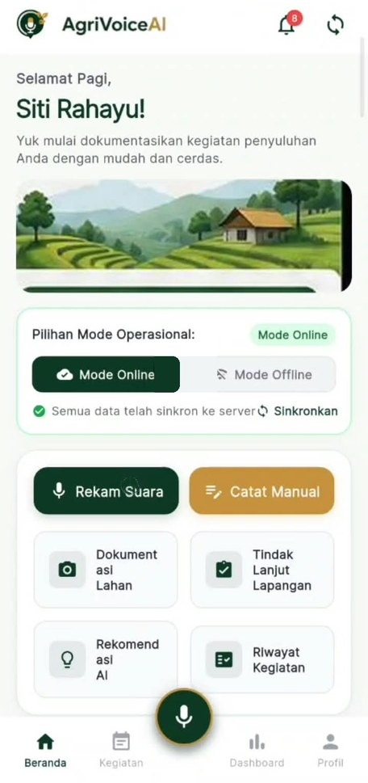

Penyuluh Cukup Bicara
Cukup ajak bicara petani, AgriVoice AI langsung merangkum laporan kunjungan secara otomatis dan terstruktur.
Ngobrol dengan petani dalam Bahasa Jawa, Sunda, atau Indonesia. AgriVoice AI menyusun laporan kunjungan, mencatat foto dan lokasi, serta memberi saran penanganan hama, bahkan tanpa sinyal.

Asisten cerdas untuk Petugas Penyuluh Lapangan (PPL). Tinggalkan formulir manual di bawah terik sawah: rekam percakapan, dan aplikasi mengubahnya menjadi transkrip, data terstruktur, diagnosis hama, sampai berita acara PDF. Melengkapi sistem penyuluhan yang sudah berjalan, bukan menggantikannya.
Mengubah percakapan suara di lapangan menjadi laporan kunjungan dan rekomendasi agronomi.
PPL di lapangan, koordinator penyuluh, dan pimpinan dinas yang butuh data lapangan cepat dan faktual.
Voice-first, offline-first, mengenali istilah hama lokal, dan bukti kunjungan yang otentik.
Dari kunjungan lapangan sampai pemantauan pimpinan, semua dalam satu alur kerja.
Rekaman percakapan menjadi transkrip siap sunting dan data laporan terstruktur.
Mengenali percakapan dalam bahasa Indonesia, Jawa, dan Sunda, termasuk istilah hama dan tanaman lokal.
Dipandu dari memilih petani sampai pratinjau laporan, dengan validasi dan simpan draf.
Foto, titik koordinat, dan waktu tercatat otomatis sebagai bukti kunjungan.
Kemungkinan masalah dan tingkat keparahan, dengan rujukan SOP. Keputusan tetap di tangan PPL.
Tetap bekerja di lokasi tanpa sinyal. Data terkirim otomatis saat koneksi kembali.
Pimpinan memantau KPI, tren kunjungan, dan sebaran kegiatan per wilayah.
Data petani, kelompok tani, petak lahan, dan riwayat musim tanam.
PPL menyusun, koordinator memeriksa, pejabat dinas mengesahkan.
Pilih petani binaan dan pastikan GPS perangkat aktif.
Tekan rekam dan berdialog wajar dengan petani.
Ambil foto petak dengan geotag dan timestamp otomatis.
AI menampilkan transkrip, klasifikasi hama, dan saran penanganan.
Saat ada sinyal data terkirim, laporan PDF siap dicetak.
Geser ke samping untuk melihat semua flyer. Ketuk gambar untuk memperbesar.
Cukup ajak bicara petani, AgriVoice AI langsung merangkum laporan kunjungan secara otomatis dan terstruktur.
Pilih petani binaan, rekam percakapan di sawah, dan simpan laporan lengkap dengan foto geotag dan waktu.
Mengenali dialog bahasa Indonesia, Jawa, dan Sunda hingga kosakata hama lokal dan istilah agronomi.
Fitur offline-first memastikan perekaman dan diagnosis tetap lancar di pelosok tanpa ketergantungan internet.
Pantau rekapitulasi data kunjungan PPL, sebaran petak sawah, dan indikator kinerja dinas secara real-time.
Membantu PPL bekerja lebih efisien di bawah terik sawah tanpa repot mengisi formulir kertas manual.
Identifikasi gejala penyakit tanaman secara cepat dengan panduan Standar Operasional Prosedur (SOP) dinas.
Kabar dan tips pertanian dari AgriVoice AI.

Kenali ciri-ciri awal serangan wereng coklat di lahan padi dan langkah preventif pengendalian hama terpadu (PHT) sebelum menyebar luas.

Dinas pertanian menggelar program percontohan pemanfaatan asisten penyuluhan suara di sejumlah balai penyuluhan pertanian.

AgriVoice AI merilis pembaruan arsitektur model suara on-device yang mendukung bahasa Jawa dan Sunda tanpa ketergantungan sinyal internet.
Bisa. Perekaman, transkripsi, dan rekomendasi berjalan di perangkat, lalu data tersinkron otomatis saat koneksi kembali.
AgriVoice AI dirancang mengenali Bahasa Indonesia, Jawa (Krama dan Ngoko), serta Sunda, termasuk istilah hama lokal.
Akses dibatasi berdasarkan peran pengguna, dan setiap perubahan tercatat dalam jejak audit.
Bisa, lewat REST API dengan aplikasi daerah yang sudah ada.
Hubungi tim kami untuk demo dan program percontohan bagi dinas pertanian dan pemerintah daerah.
Hubungi via WhatsApp